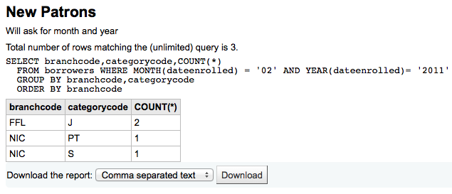
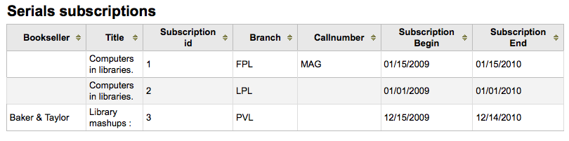
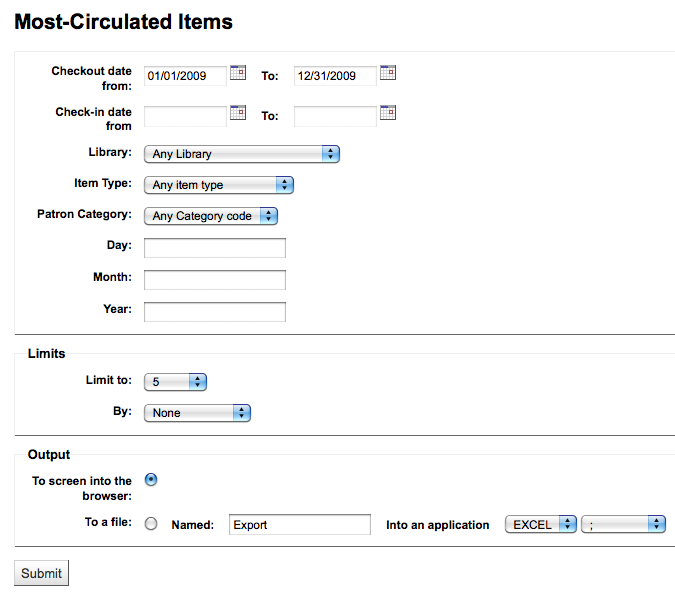
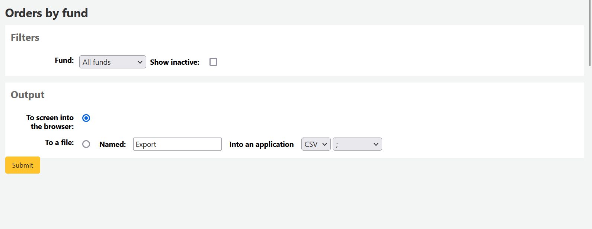

報表
Koha 的報表是聚集資料的方法之一。報表用於產生統計、讀者清單、排架清單、或其他由資料庫產生的清單。
到那： 更多 > 報表
客製化報表
Koha 的資料儲存在 MySQL 資料庫即圖書館員可以使用 報表精靈 <guided-report-wizard-label> 或撰寫他們自己的 SQL query <report-from-sql-label> 從中產生任何想要的報表。
新增客製化報表
報表精靈
報表精靈以六個步驟引導您建立報表。
步驟 1：選擇編輯報表的模組。就是決定資料來源的表單與欄位。
大部份情況下含有讀者及其他敏感資訊時，’報表公開’ 應預設為 ‘否’。JSON 報表服務 不需認證任何人均可使用。
說明
若系統管理已設定快取記憶您就有更多選擇。與公開報表有關。若把報表公開則需時時執行從而耗費系資料。設定此值可避免此現象。
步驟 2：選擇報表類型。目前，祗有 Tabular 可選。
步驟 3：選擇編入報表的欄位。複選並以 CTRL+Click 把每個欄位再按下新增鈕。
步驟 4：選擇報表的範圍(館藏類型或分館等)。不需要限制時，直接點選 ‘下一步’。
步驟 5：執行數學算式。不需要計算時，按 ‘下一步’ 略過它。
步驟 6：選擇資料順序。不需要排序則直接按 ‘完成’ 鈕。
完成之後，將出現由報表精靈產生的 SQL。從此點選 ‘儲存’ 儲存報表，或複製 SQL 並以人工編輯它。
若選擇儲存報表，將詢問報表名稱、排序入的群組與次群組，以及必要的說明。
報表儲存後，將與其他儲存的報表一起出現在 ‘使用儲存的’ 頁面。
說明
您可以在管理模組的 :ref:`’欄組態’<column-settings-label>`部份, 客製此表的列(table id: table_reports)。
可從這裡編輯、執行報表，或指定執行報表的時間。點選欄標題即可依欄位排列報表(建議以新增報表日期排序)。以左方的篩選器選單篩選報表，或依客戶群組分頁尋找報表。
來自SQL的報表
除了報表精靈，還可以用 SQL 撰寫自己的報表。其他圖書館寫的報表，公開在 Koha 共筆：http://wiki.koha-community.org/wiki/SQL_Reports_Library。各館自己的資料庫結構在 /installer/data/mysql/kohastructure.sql 或線上：http://schema.koha-community.org。
To add your query, click the link to ‘Create from SQL’ on the main reports module
or the ‘New report’ button at the top of the ‘Saved reports’ page.
在顯現的表單填入資料
Report name: the name is what will appear on the ‘Saved reports’ page to help you identify the report later. It will also be searchable using the filters found on the left of the ‘Saved reports’ page.
Report group: you can use the ‘Report group’ to organize your reports in tabs on the ‘Saved reports’ page. You can choose from the list of existing groups, or create one on the fly by choosing the ‘or create’ radio button.
Report groups are set in the REPORT_GROUP authorized value category.
警告
If you’re adding a report group on the fly, the code should not include special characters or spaces.
Report subgroup: if you chose a report group, this field will appear to further organize your reports. Choose a subgroup from the list, or create one on the fly by choosing the ‘or create’ radio button.
Report subgroups are set in the REPORT_SUBGROUP authorized value category.
备注
Report subgroups need to have unique values in ‘Authorized value’ and ‘Description’. The ‘Description (OPAC)’ field needs to contain the authorized value for the report group that the subgroup falls under.
警告
If you’re adding a report subgroup on the fly, the code should not include special characters or spaces.
Report is public: this should be left to the default of ‘No’ in most cases, especially if the report contains patron or other sensitive information. A public report can be accessed using the JSON reports services by anyone and without authentication.
Cache expiry: this field will only appear if your system administrator has set up memcache on your server. This is related to public reports. If you make the report public, it’s constantly running and will cause a large load on your system. Setting this value prevents that.
Notes: notes will appear on the ‘Saved reports’ page, and can be used to provide more details about the report or tips on how to enter values when it runs.
SQL: type or paste the SQL for the report (see report writing tips below).
Once everything is entered click the ‘Save report’ button and you’ll be presented with options to run it. From here, you can also edit it, duplicate it, or schedule it to be run later.
Once a report is saved, you do not have to recreate it, it will appear on the ‘Saved reports’ page with all other saved reports.
备注
您可以在管理模組的 :ref:`’欄組態’<column-settings-label>`部份, 客製此表的列(table id: table_reports)。
From the ‘Saved reports’ page, you can make edits, run the report, or schedule a time to run the report later. To find the report you created, you can sort by any of the columns by clicking on the column header (creation date is the best to find the report you just added). You can also filter your results using the filter menu on the left or use the tabs to find reports based on your custom groups.
撰寫報表提示
Autocomplete
When you start typing in the SQL field, autocomplete options will be displayed.
Use the arrows on your keyboard to choose the correct option and press ‘Enter’ or ‘Tab’ to insert it into your report, or simply click on the option to insert it.
Autocomplete options include:
SQL keywords such as SELECT, FROM, WHERE, etc.
table names
column names
备注
To have suggestions for column names, you must type the table name first, followed by a period, then start typing the column name.
For example, to have the suggestion for
cardnumber, you must typeborrowers.ca.
執行參數
若執行報表耗費過多資源時您可考慮使用執行參數。執行參數可以在執行報表前先篩選資料以節省系統資源。
Click the button ‘Insert runtime parameter’ and choose which parameter to add.
Authorized value: will display a drop down menu of the value descriptions from the chosen authorized value category. The authorized value code will be inserted in the report when it is run.
Bibliographic framework: will display a drop down menu of MARC bibliographic frameworks. The framework code will be inserted in the report when it is run.
Classification sources: will display a drop down menu of classification sources. The classification code will be inserted in the report when it is run.
Date: will display a calendar to pick a date. The date in YYYY-MM-DD format will be inserted in the report when it is run.
Item types: will display a drop down menu of item types. The item type code will be inserted in the report when it is run.
Libraries: will display a drop down menu of libraries. The library code (branchcode) will be inserted in the report when it is run.
List: will display a large text box in which the user can enter many values, one per line. Those values will be inserted in the report, separated by commas, when it is run.
警告
在參數清單的情況下，使用者必須在每行寫一個值。
Patron categories: will display a drop down menu of patron categories. The category code will be inserted in the report when it is run.
Cash registers: will display a drop down menu of cash registers. The cash register’s internal id will be inserted in the report when it is run.
Debit types: will display a drop down menu of debit types. The debit type code will be inserted in the report when it is run.
Credit types: will display a drop down menu of credit types. The credit type code will be inserted in the report when it is run.
Text field: will display an empty text field in which the user can enter any text.
备注
在文字盒裡必須置入 “%” 其內容才算是 ‘空白’。否則，這樣的內容 “” (空字串) 被視為空字串仍有內容。
例如，不輸入任何內容的: “標題=<<Enter title>>”將顯示帶有標題’’（無標題）的結果。
如果你想擁有一些非強制性的東西，可以使用 “標題像<<Enter title>>”，並在運行時輸入%，而不是什麼都沒有。
After you choose the type of runtime parameter, it will ask you for the parameter label. This is what the user will see as the label for the choice they have to make or text they have to enter.
The syntax inserted into the report is <<Label|authorized_value>>.
The << and >> are just delimiters to indicate the start and end of the runtime parameter.
The label will be displayed on the left of the choice or value to enter.
The authorized_value can be omitted if not applicable. If it is absent, a free text field will be displayed. If it contains an authorized code (see table below), a drop down of the values will be displayed.
备注
You can write those in manually as well, you don’t have to go through the ‘Insert runtime parameter’ button. As long as the syntax is correct, Koha will interpret it as a runtime parameter.
可用於執行參數的參數清單
參數 |
使用者所見為 |
插入詢問的內容 |
|---|---|---|
日期 |
日期選擇器 |
有效格式化日期 |
分行 |
分行名稱的下拉選單 |
分行代碼 |
館藏類型 |
館藏類型名稱的下拉選單 |
館藏類型 |
類別代碼 |
讀者類別說明的下拉選單 |
借款人類別代碼 |
書目_框架 |
MARC書目框架的下拉選單 |
框架代碼 |
清單 |
大型文字框 |
逗號分隔值 |
(容許-值-類別) |
類別中的容許值說明的下拉選單 |
容許值 |
(沒什麼) |
文字框 |
輸入的文字 |
备注
You can have more than one runtime parameter in a given SQL query.
範例 1
SELECT surname,
firstname
FROM borrowers
WHERE branchcode = <<Enter patrons library|branches>>
AND surname LIKE <<Enter filter for patron surname (% if none)>>
範例 2
SELECT *
FROM items
WHERE homebranch = <<Pick your branch|branches>>
AND barcode LIKE <<Partial barcode value here>>
範例 3
SELECT title,
author
FROM biblio
WHERE frameworkcode = <<Enter the frameworkcode|biblio_framework>>
範例 4
SELECT cardnumber,
surname,
firstname
FROM borrowers
WHERE dateexpiry <= <<Expiry date|date>>
範例 5
SELECT *
FROM items
WHERE itemnumber IN <<List of itemnumbers (one per line)|list>>
警告
在參數清單的情況下，使用者必須在每行寫一個值。
來自 Mana 的 SQL 報表
由 Mana KB 新增預設報表的方式是，在 “由 SQL 產生報表” 內，您可按, you can search Mana KB for pre-made reports by clicking on “新增報表” 並選擇 “從 Mana 新增 SQL”。

說明
從管理模組設定 組態 Mana KB 後，才出現此選項。
提示您以關鍵字搜尋知識庫。
在搜尋結果，您將看到
報告詳情 (姓名、說明與類型)
多少人已使用此款目 (# 表示使用者)
當它用於姓 (最後匯入)
Koha 使用者新增的評論 (評論)

勾選 “匯入” 把報告複製在您自已的儲存報告內。
您可編輯、複製、刪除、執行它，如同自己的其他報告。
複製報表
可以複製現在報表為新的報表。進入 ‘儲存報表’ 頁面查看已有的報表。

在報表右方有個 ‘動作’ 下拉選單。按下並選擇 ‘複製’ 鈕以現在的報表為基礎產生新報表。修改必要的 SQL 後成為新的報表。
編輯客製化報表
可從報表清單編輯各報表。點選 ‘使用已儲存的’，檢視 Koha 已儲存的報表清單。
說明
您可以在管理模組的 :ref:`’欄組態’<column-settings-label>`部份, 客製此表的列(table id: table_reports)。
點選欄位標題，讓報表依欄位排序，就能找到指定的報表。也可用左方的篩選器選單或分頁，依照客製化群組，找到指定的報表。
您可以從這個清單勾選報表右下角的 ‘動作’ 鈕從彈出的選單裡選擇 ‘編輯’。
The form to edit the report will appear. Use the “update button” to save your modifications or click on “update and run SQL” to save and display the report results.
執行客製化報表
儲存客製化報表後，可從儲存報表頁面勾選該報表右方的 ‘動作’ 連結再點選 ‘執行’ 它。
執行報表時將被要求輸入若干值

或直接看到結果

從此結果裡，您可以點選上方的 ‘執行報表’，再執行報表；或點選 ‘編輯’ 鈕，編輯報表；或點選 ‘新增’ 鈕，重新建立報表。從結果下方選取檔案類型，選擇 ‘下載報表’ 標籤，再選取 ‘下載’ ，就能下載您的結果。
說明
逗點區隔的純文字檔案稱為 CSV 檔案，任何試算表應用程式都可以打開它。
將報表輸出寄送給批次修改工具
在執行一個包含館藏編號、書目編號和/或讀者卡片編號的報表後，可以通過點擊報表結果中的 ‘具有X條可見記錄的批次操作 ‘按鈕，將編號列表直接輸入相關的批次修改工具中。 X取決於你選擇在螢幕上顯示的記錄數（最多 1000條）。

統計報表
Statistic reports will show you counts and sums. These reports are all about numbers and statistics, for reports that return more detailed data, use the guided report wizard. These reports are limited in what data they can look at, so it’s often recommended to use custom reports for official end of the year statistics.
採訪統計
說明
可檢視的報表內容有限，建議使用 客製化報表 做為年度統計之用。
使用提供的表單，選定顯示的欄與列。
選擇輸出至瀏覽器，您的結果將出現在螢幕。

您可選擇匯出成檔案，供後續的使用。
產生報表時，必須選定計算或總結其值。

選擇改變結果的總數，做為總支出的金額。

讀者統計
說明
可檢視的報表內容有限，建議使用 客製化報表 做為年度統計之用。
使用提供的表單，選定顯示的欄與列。
選擇輸出至瀏覽器，您的結果將出現在螢幕。

根據你的選擇，可在搜尋表單之上看到部份查詢資訊。也可選擇匯出至檔案再編輯成您的需要。
目錄統計
說明
可檢視的報表內容有限，建議使用 客製化報表 做為年度統計之用。
使用提供的表單，選定顯示的欄與列。
選擇輸出至瀏覽器，您的結果將出現在螢幕。

您可選擇匯出成檔案，供後續的使用。
流通統計
說明
可檢視的報表內容有限，建議使用 客製化報表 做為年度統計之用。
使用提供的表單，選定顯示的欄與列。
選擇輸出至瀏覽器，您的結果將出現在螢幕。

您可選擇匯出成檔案，供後續的使用。
說明
為了對按月與逐日的流通有全盤瞭解，您可執行兩次報表，一次是 ‘借出’ 的 ‘類型’ 另一次是 ‘續借’。
此報表使用 ‘期間’，或日期篩選，允許您以每月第一天至次月第一天篩選。例如：10/1 至 11/1 做為十月份的統計。
設定日期範圍，查看逐日統計。</br> 如：”從 XXX 開始至 XXX 結束的流通統計”。
對一個月而言，如11/01/2009 至 12/01/2009
對整年而言，如：01/01/2009 至 01/01/2010
以一天而言，如： 11/15/2009 至 11/16/2009，會找到15日的流通紀錄
追蹤館內使用
利用流通統計報表精靈，您可以執行館內使用報表，祗需從 ‘類型’ 下拉選單裡選取 ‘館內使用’ 即可：
期刊統計
說明
可檢視的報表內容有限，建議使用 客製化報表 做為年度統計之用。
以提供的表單選擇系統內指定的期刊。
選擇輸出至瀏覽器，您的結果將出現在螢幕。

您可選擇匯出成檔案，供後續的使用。
預約統計
說明
可檢視的報表內容有限，建議使用 客製化報表 做為年度統計之用。
根據提供的統計資料，可以看到本館的預約數、滿足數、取消及其他統計。從選定的表單指定顯示的欄與列。也可用表單右方的篩選器，祗統計部份內容。
選擇輸出至瀏覽器，您的結果將出現在螢幕。

您可選擇匯出成檔案，供後續的使用。
借出最多的讀者
此報表將列出借出最多館藏的讀者。
選擇輸出至瀏覽器，您的結果將出現在螢幕。

您可選擇匯出成檔案，供後續的使用。
借出最多館藏
此報表將列出被借出最多的館藏。

選擇輸出至瀏覽器，您的結果將出現在螢幕。

您可選擇匯出成檔案，供後續的使用。
無借出的讀者
此報表將列出不曾借出館藏的讀者。
選擇輸出至瀏覽器，您的結果將出現在螢幕。

您可選擇匯出成檔案，供後續的使用。
不曾借出的館藏
此報表將列出不曾借出的館藏。
選擇輸出至瀏覽器，您的結果將出現在螢幕。

您可選擇匯出成檔案，供後續的使用。
目錄依館藏類型排序
此報表列出每個分館各種資料類型的館藏總數。
選擇輸出至瀏覽器，您的結果將出現在螢幕。
您可選擇匯出成檔案，供後續的使用。
遺失的館藏
此報表允許您產生系統內被標記為遺失的館藏清單
一旦你選擇了參數，你會看到相應的館藏清單。
說明
您可以在管理模組的 :ref:`’欄組態’<column-settings-label>`部份, 客製化此表的列(table id: lostitems-table)。
以基金訂購
如果你使用 採訪模組，你將能夠看到每個基金中訂購的所有館藏。

一旦你選擇了你想要查看的基金，你可以輸出結果或在瀏覽器中查看。如果你選擇直接查看，你將會看到訂單的清單。

說明
您可以在管理模組的 :ref:`’欄組態’<column-settings-label>`部份, 客製化此表的列(table id: funds-table)。
平均借出時間
此報表將依照您要求的類型列出館藏平均借出的時間：
選擇輸出至瀏覽器，您的結果將出現在螢幕。

您可選擇匯出成檔案，供後續的使用。
報表字典
報表字典是一種事先定義報表常用的篩選器。不妨新增報表精靈預設之外的篩選器。勾選報表字典頁面的 ‘新增定義’，並依照下列 4 個步驟，就能新增定義或篩選器。
步驟 1：給予此定義並提供必要的說明

步驟2：選擇詢問的模組。
步驟3：從顯示的表單裡選取詢問的欄位。

步驟4：從欄位選取值。自動佈署於可用的資料庫。

確認您的選項以便儲存此定義。

您的定義將出現在報表字典頁面

新增報表後，在下方的定義出現限制的選項，當成一般的篩選器。
Report plugins
Some plugins that are available can be used to make or enhance reports.
Get there: More > Reports > Report plugins > Report plugins
From this page, you will see only report-type plugins.
See the managing plugins section of this manual to learn how to manage your report-type plugins.